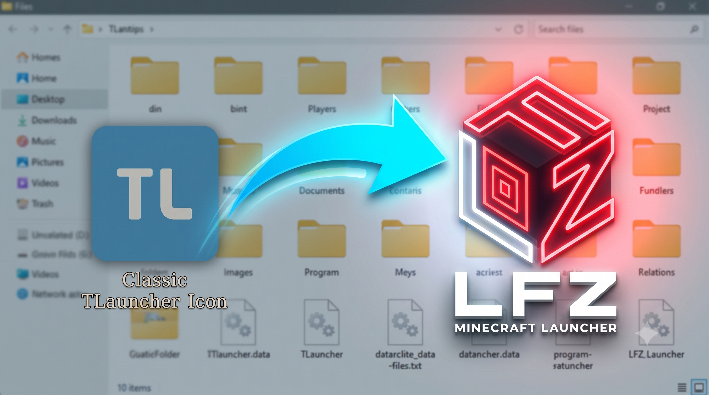

Categoría: Guías del Launcher
Cómo migrar todos tus mundos y mods desde TLauncher al LFZ Launcher
LFZ Team
•
9 de Agosto, 2026

Pásate a la nueva generación sin perder nada
¿Has estado usando TLauncher u otros programas legacy y finalmente has decidido pasarte al moderno LFZ Launcher? ¡No te preocupes! No perderás ninguno de tus mundos, texturas o configuraciones.
¿Dónde están tus cosas viejas?
Normalmente, tus mundos antiguos están en la ruta %appdata%/.minecraft/saves. Presiona Windows + R, escribe %appdata% y busca la carpeta .minecraft.
Paso a paso para migrar:
- Abre LFZ Launcher y crea una "Nueva Instancia" (asegúrate de ponerle la misma versión de Minecraft que estabas usando antes).
- Haz clic en "Guardar". LFZ creará una carpeta limpia, aislada del resto.
- Ve a la pestaña "Ajustes" de esa instancia y haz clic en Abrir Carpeta.
- Se abrirá la carpeta de la instancia. Ahora solo debes copiar tu vieja carpeta
saves(tus mundos) yresourcepacksdesde el viejo `.minecraft` y pegarla ahí.
LFZ Launcher mantiene todo separado en "Instancias". Esto significa que tus mods de la 1.20 nunca se mezclarán con los de tu mundo técnico en la 1.12. ¡Es la forma más segura y ordenada de jugar!